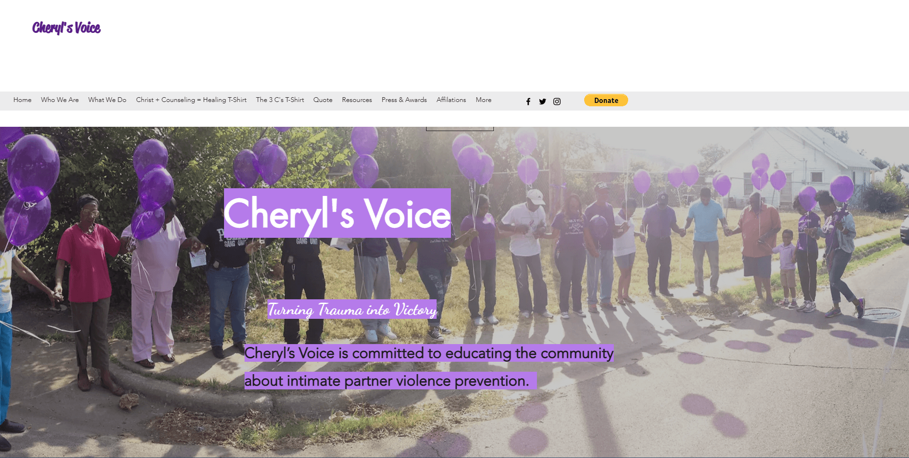
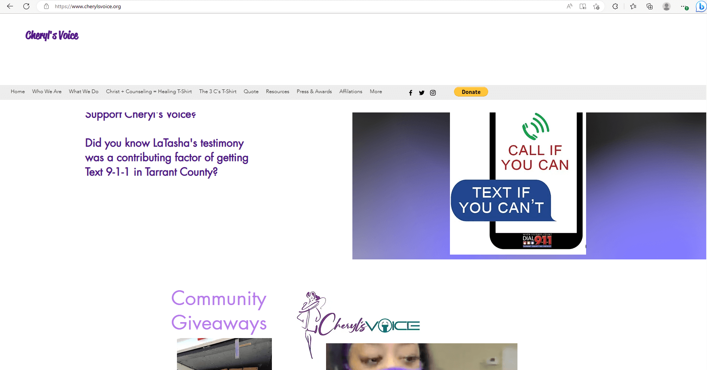
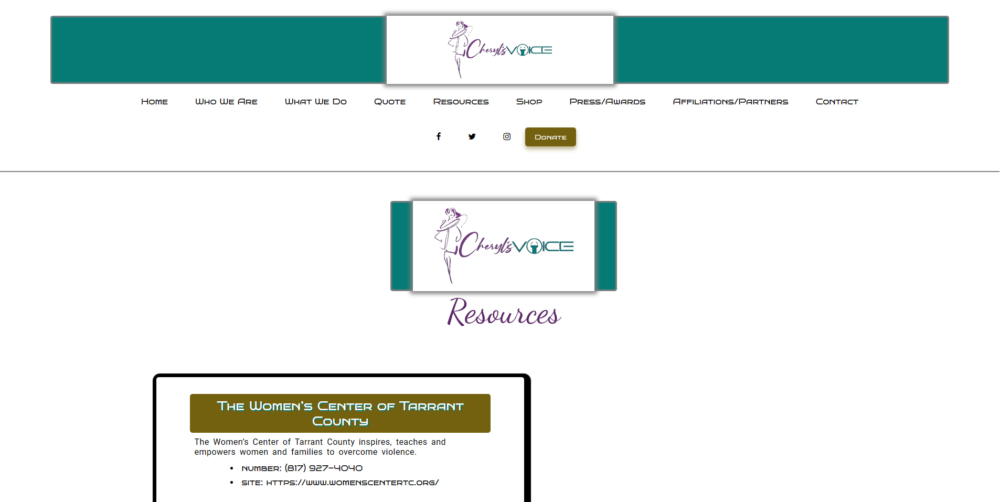
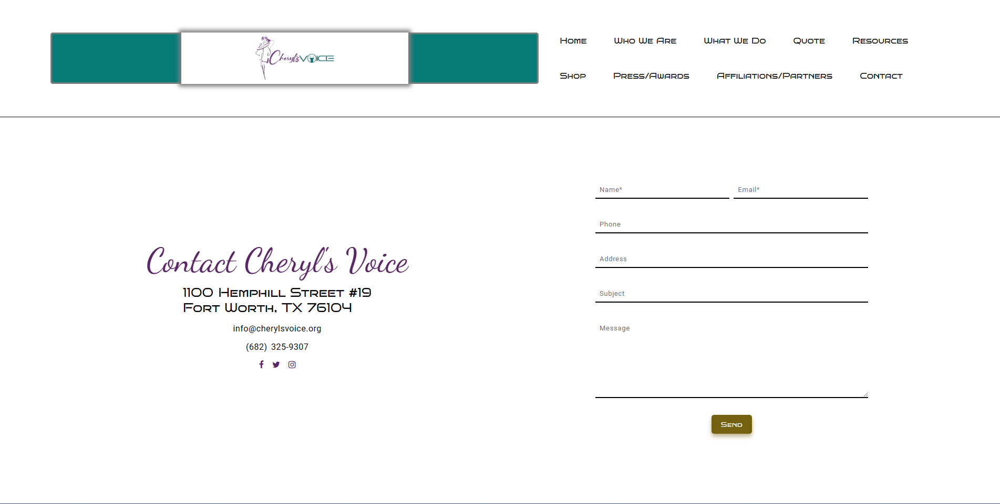

Cheryl's Voice
Cheryl's Voice is a non-profit organization that empowers and
encourages youth that have witnessed domestic abuse in their household.
They are based in Fort Worth, Tx. They've partnered with companies including
Walmart, The Women's Center, Youth Advocate, OneSafe Place, etc.
Analysis: Inconsistency in design aspects, such as font size and button appearance. There is random spacings and alignments in sections and navigation. Confusing layout.
Goal: A design that better organizes the content. Interactive aspects like a parallax effect on the home page and a shrinking navigation bar. A small logo tweak.
Disclaimer: This is a personal project. Not affiliated with Cheryl's Voice.
Images
Before:
 After:
 CSS Attributes
Fonts
Dancing Script, Bruno Ace SC, Roboto
-
sizes
- 24px
- 1rem
- 2rem
- 4rem weights
- 300 * Light
- 400 * Normal
Grid
Flexbox
Colors
Primary
- black
- #fff
- #5a2565
- #067a75
Accent
- #736110
- grey
- #ffffff5A
- #7361107A
Spacing
Margin
- auto
- 0, 5%, 10%, -10%, 16%, 20%
- 8px
Padding
- 0, 1rem, 2rem, 4rem
- 4px, 8px
- 5%
- nav: 24px 24px